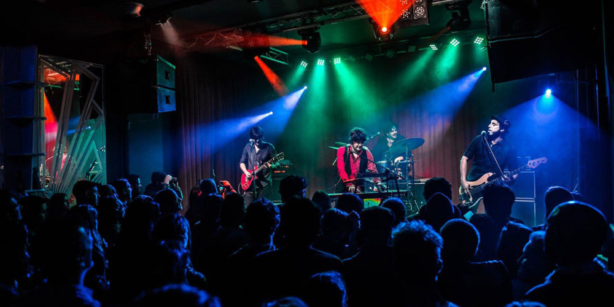

Druga edycja "Silent Disco"
13.07.2019
20 Lipca odbędzie się druga edycja "Silent Disco", jest to impreza na łonie natury, przy świetnie dopasowywującym się klimatem imprezy nad jeziorem. Czym jest Silent disco?
Jest to tzw. dyskoteka z muzyką, ale jaką? Taką że każdy uczestnik za jedyne 15zł może otrzymać słuchawki w których leci muzyka. Wydaje się dziwne, słabe? Niekoniecznie, wiele osób na początku ma podejśćie takie że myślą że im się nie spodoba, lecz serdecznie zapraszamy spróbować. W słuchawkach będzie grało 3 Dj, na każdych można zmienić kanał, w zależności do preferowanej muzyki. Dj'e grają trzy rodzaje muzyki: Disco polo, muzyka klubowa oraz hity 2019 i ich remixy! Z wcześniejszych uwag do poprzedniej edycji na słuchawkach będzie świecił się kolor, jaka muzyka aktualnie leci dla użytkownika. Tzn. Kolor zielony będzie oznaczał hity 2019, kolor żółt będzie oznaczał Muzykę klubową, a kolor czerwony będzie oznaczał Disco polo. Serdecznie wszystkich zapraszamy do wzięcia udziału w drugiej edycji Silent Disco!
Jest to tzw. dyskoteka z muzyką, ale jaką? Taką że każdy uczestnik za jedyne 15zł może otrzymać słuchawki w których leci muzyka. Wydaje się dziwne, słabe? Niekoniecznie, wiele osób na początku ma podejśćie takie że myślą że im się nie spodoba, lecz serdecznie zapraszamy spróbować. W słuchawkach będzie grało 3 Dj, na każdych można zmienić kanał, w zależności do preferowanej muzyki. Dj'e grają trzy rodzaje muzyki: Disco polo, muzyka klubowa oraz hity 2019 i ich remixy! Z wcześniejszych uwag do poprzedniej edycji na słuchawkach będzie świecił się kolor, jaka muzyka aktualnie leci dla użytkownika. Tzn. Kolor zielony będzie oznaczał hity 2019, kolor żółt będzie oznaczał Muzykę klubową, a kolor czerwony będzie oznaczał Disco polo. Serdecznie wszystkich zapraszamy do wzięcia udziału w drugiej edycji Silent Disco!
Podczas Imprezy:
- Bar z alkoholem- bezpłatne toalety dla gości
- Specjalny Kanał dla najmłodszych z piosenkami z bajek.